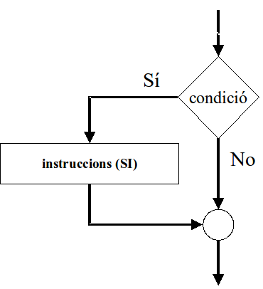
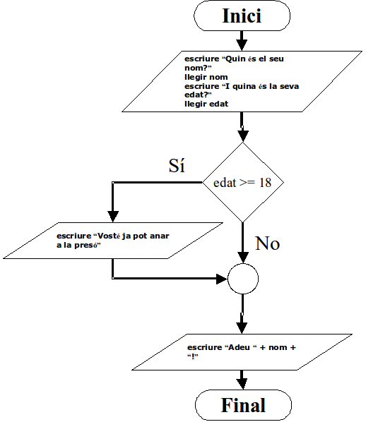

L’alternativa simple¶
«Si plou llavors treu el paraigües»
En diagrama de flux la representarem com:
En pseudocodi:
Si «condició» Llavors
«instruccions»
Fsi
En Java:
if («condició») {
«instruccions»
}
En Python:
if «condició»:
«instruccions»
Allà on diu:
condicióhi col·locarem qualsevol expressió que retorni un valor booleà.instruccionspodem tenir una o més instruccions; depenent del llenguatge, fins i tot cap!
Alguns elements a observar:
tant si la condició es compleix com sinó, s’executarà la següent instrucció que aparegui després de la boleta, el
fsi, la clau tancada}o al nivell de la indentació deif.el bloc d’instruccions a executar quan es compleix la condició, es troba delimitat per una caixa, entre
llavorsifsi, entre claus{}o per la indentació (els espais davant«instruccions»a la versió Python.el sagnat o indentació només és forçada pel llenguatge Python. Tant pseudocodi com Java podrien fer sense ella. Això no vol dir que sigui voluntari: si vols que els teus programes s’entenguin, has d’indentar-los correctament.
Per exemple, seria perfectament vàlid escriure el programa com:
if («condició») { «instruccio1»; «instruccio2»; «instruccio3»; }Seria, però, molt més incòmode de llegir pels desenvolupadors.
Important
Hem de considerar la indentació com part de la documentació del codi. De la mateixa manera que sabem que hem de documentar, també hem d’indentar. Obligui el compilador o no.
Com provem els nostres programes amb alternativa simple?¶
Per estar segurs que els nostres programes amb condicionals funcionen correctament, ens caldrà definir proves que passin per totes les diferents branques. Amb alternativa simple ens cal una prova quan es compleix la condició i una altra quan no.
- amb alternatives dobles, niuaments múltiples i alternatives múltiples, ens caldrà una prova que garanteixi el compliment de cada condició possible.
Juguem una mica¶
A l’hora de desenvolupar els següents programes continuarem realitzant totes les passes que hem aprés en exercicis anteriors. En concret recorda:
- Defineix una capçalera
- Simula una execució per cada branca
- Genera els fitxers d’entrada i sortida esperada per cada prova
- Decomposa el programa en, com a mínim tres subproblemes: obtenció de l’entrada, càlcul i presentació dels resultats
- Resol cada subproblema. Si cal, decomposa’ls encara més.
Els programes desenvolupats poden pressuposar que les dades que introdueixi l’usuari seran sempre del tipus correcte. Els programes hauran, però, de estar preparats perquè l’usuari pugui introduir valors incorrectes (per exemple, una edat negativa)
Si algun dels problemes et resulta complicat d’entendre, potser t’ajudarà dibuixar-lo amb un diagrama de flux.
Pràctica 1. Si ets adult llavors ets responsable¶
Desenvolupa un programa que demani el nom i l’edat a l’usuari, i si és major de 18 anys li digui “Vostè ja pot anar a la presó!”. Finalment, sigui quina sigui l’edat de l’usuari el programa s’acomiadarà dient “Vagi amb compte «nom de l’usuari»!”.
Exemples d’interacció:
$ python3 preso.py
Com es diu?
Manel
Quina edat té?
17
Vagi amb compte Manel
$ python3 preso.py
Com es diu?
Anna
Quina edat té?
19
Vostè ja pot anar a la presó!
Vagi amb compte Anna
El diagrama de flux podria tenir el següent aspecte:
Ref. IP10.1